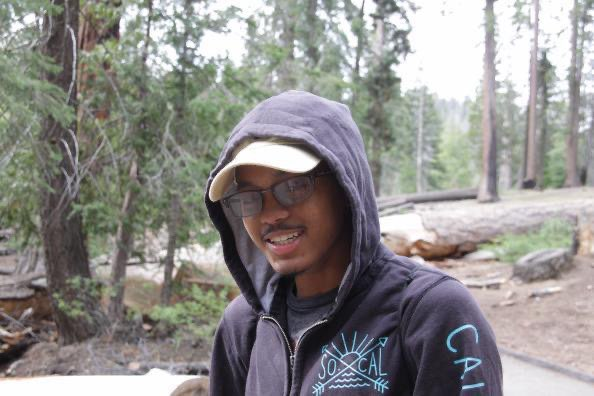
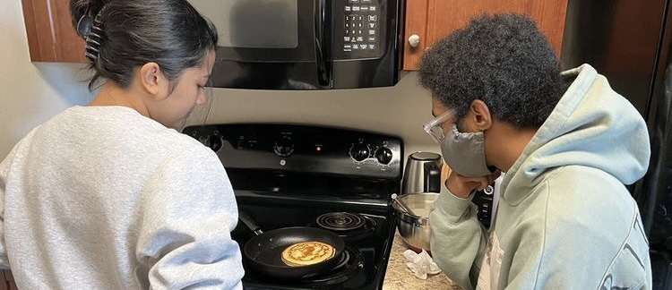
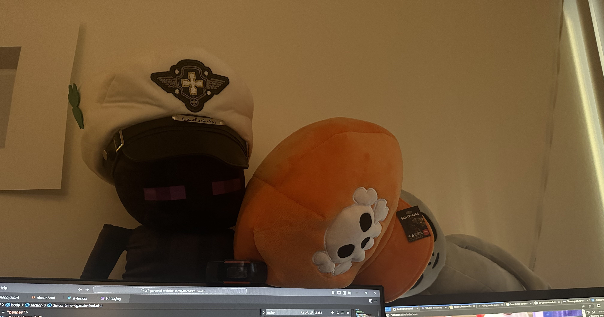

This site is orginally meant to be an assignment for INF 133 at UCI. I actually have two other websites, but one is done through Webflow and the other through Github Pages and Gem/Ruby. This actually is my first experience coding a website from complete scratch and means that I have the ability to make websites with any required method.
While I plan to have a page dedicated one of my hobbies and another about myself, I don't think it would hurt to simply talk about stuff I do or like doing besides my main hobby as a bit of introduction. This'll be mostly miscelleneous stuff that I dabble in.
The first thing I'd like to mention cooking. I am not the greatest chef out there; nor am I even the best cook in my own apartment, but the stuff I do know how to make is not too shabby. I've been getting year by year. From making bad quesadillas in a microwave, making eggs in multiple ways, to eventually making actual dishes like chicken alfredo, carbonara, tacos, lasagna, and perfect medium rare steak (I bought a sous vide so I can kinda cheat here).
Another thing I had a little arc with are crane games. My roommates go to Round1 a lot to play Dance Dance Revolution. I'm not really into that game, but I'll still tag along to play a fighting game or Beat Coaster. One time as I trying to find something to do at Round1, I saw a stuffed animal in one of the machines that I really wanted and I spent the rest of my credit trying to get it. It was a fat and fluffy penguin and I just couldn't get it. As I ran out of tokens and left, a guy instantly gets on the machine and gets the penguin on his first try. What made it worse is that he was staring at me while the claw was dragging the stuffed animal to the prize depot. After grabbing his prize, he walked towards me. I thought he was taking pity on, but instead he asked me to keep his bag open as he put his prize in it. This affected me so badly that I spent the rest of the year trying to get better at crane games. I won a good bit of stuffed animals, but there was a huge dent in my wallet.
The last little tidbit I would like to share here is that I started getting into video game development. After the whole Unity fiasco where they decided to be really greedy towards their users, I decided that I should try one of their competitors. I have been dabbling within Godot 4 as I heard it was akin to Python and decent for smaller scale games. My game is going to be a PvE wave-based game that I think is fairly unique(as of 2024, Riot Games announced a project that is similar to mine). It's way too early to show anything I have done, but I learned how to make things move, attack, spawn other nodes, and clear themselves if they lose all their HP. I have a lot of work to do but due to my classes finally being finished, I may have time to pursue the rest of this hobby. That is all for now. About will be more personal, while hobby will go in depth about something that I love.